Case Study — 04
Ratchthani
Leasing
A mobile app for vehicle loans, where the main task is applying for a loan: from choosing a vehicle type to tracking the result.
Context
Ratchthani Leasing wanted a mobile app for vehicle loans. The main function was applying for a loan, so that became the spine of the design.
This was a pitch. The sales team talked to the client directly and briefed me, and the Business Development team presented the design to the client. I was the only designer on it.
Names, contract numbers, plate numbers and amounts shown are sample data.
Approach
I started by researching several competitors' apps to see how loan applications are usually structured, then designed the flow and screens myself in Figma.
Research
Reviewed several competitors' loan apps to compare how they structure applying.
Flow
Mapped one path from registration to a decision, in a fixed number of steps.
Screens
Designed the mobile screens, including the calculator, the status tracking and payment.
Decisions I made
Start from the vehicle
- The home screen offers eight vehicle types, and each one leads to its own loan page.
Show the whole process first
- A six-step overview appears before the first form, so people know what is coming and what they need.
Let people test numbers
- A calculator is available on the product page and again inside the application, before any commitment.
Keep progress visible
- A four-step bar sits at the top of the application, and a status timeline follows after submitting.
Entry & Registration
The home screen starts from the vehicle being financed. Registration asks who is applying, then verifies the phone number and sets a PIN.
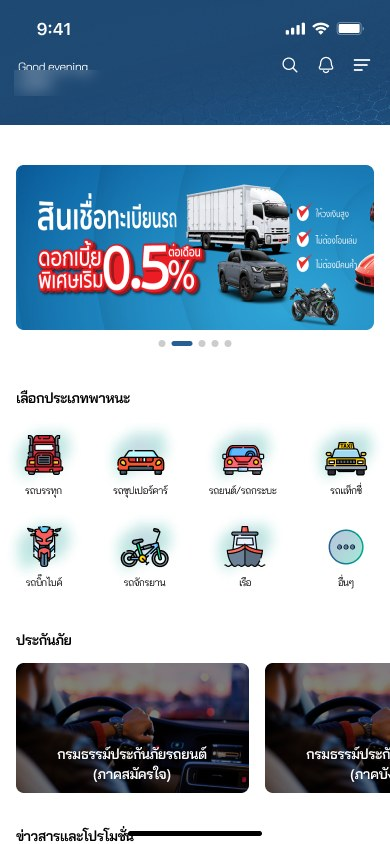
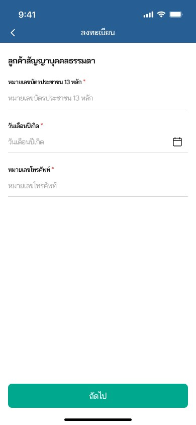
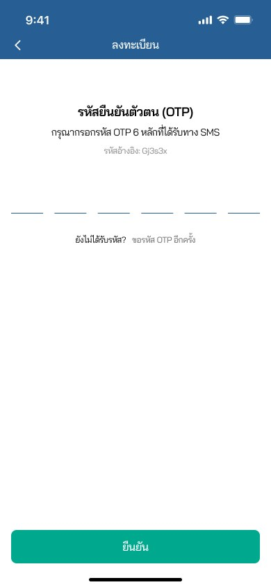
- Home offers eight vehicle types: truck, supercar, car and pickup, taxi, motorbike, bicycle, boat and other
- Registration is split by customer type, individual or juristic person, and each has its own fields
- Phone verification by a six-digit SMS code, then a PIN is created for later transactions
Product & Calculator
Each vehicle type opens a product page that explains the loan before asking for anything, and lets people test numbers first.
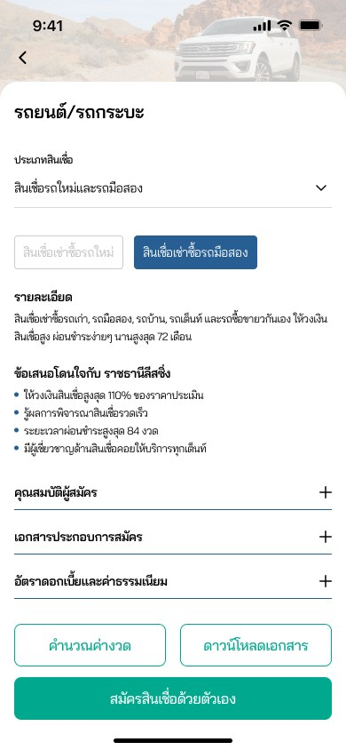
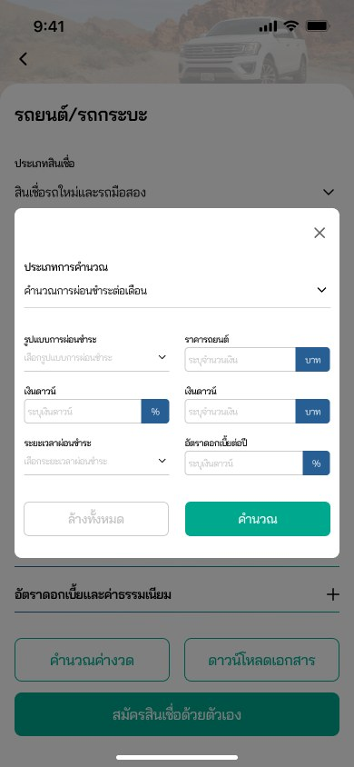
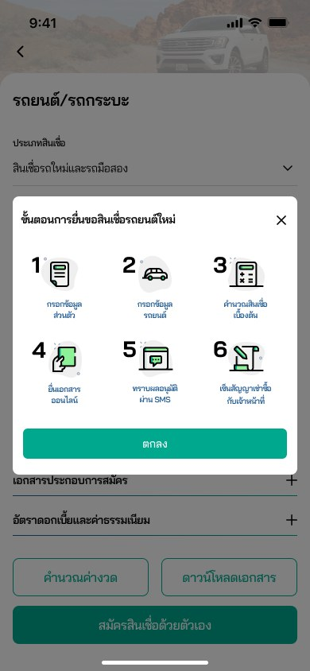
- Details, benefits, eligibility, documents and rates sit on one page, with the less urgent ones collapsed
- The calculator opens in a modal, so people can try numbers without leaving the page
- A six-step overview shows the whole process before the first form, ending in an SMS result and signing with an officer
Application Flow
The application is four steps, with the progress shown at the top of every screen.
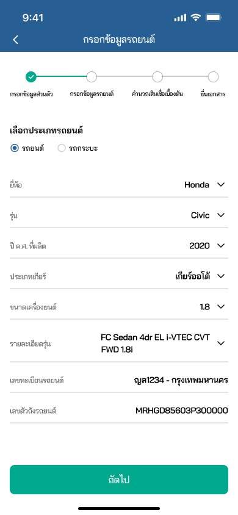
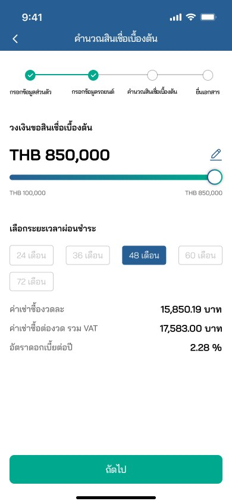
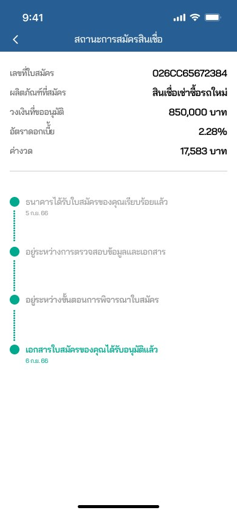
- Steps are Personal information, Vehicle information, Estimate and Documents, with checkmarks for finished steps
- The estimate uses a slider for the amount and chips for the term (24 to 72 months), and shows the instalment with VAT and the yearly rate
- After submitting, a status timeline shows where the application is: received, checking documents, under review, approved
After Approval
Beyond applying, the app also shows the active loan and takes payments.
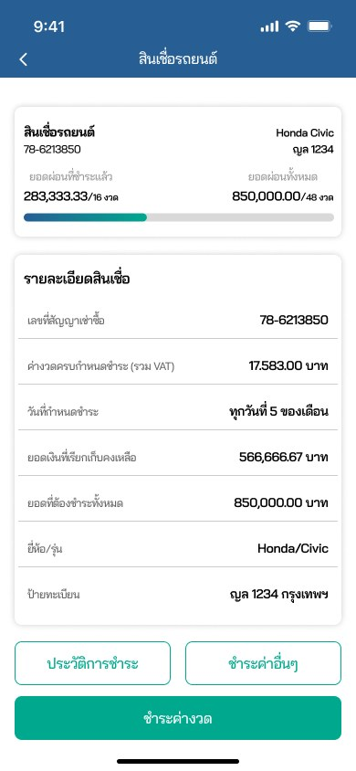
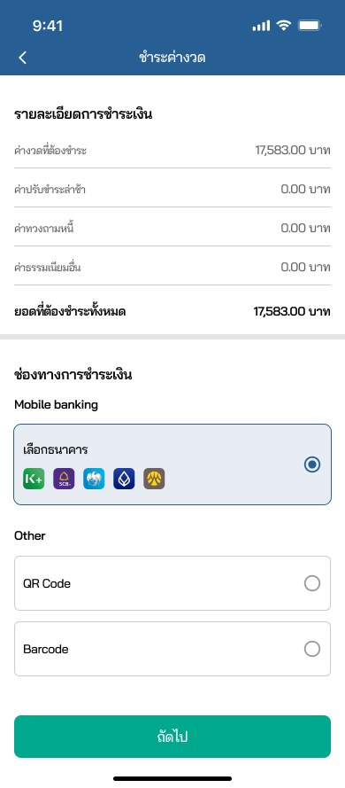
- The loan page shows instalments paid against the total as a progress bar, with contract details below
- Payment lists the amount, late fees and other fees, then offers mobile banking, QR code or barcode
Status
This was a pitch design. I have no results or client feedback to report, and I did not test it with users.
What I'd measure next
These are a plan, not results.
- Completion rate of the application, and where people leave between the four steps
- How many people use the calculator before they apply, and how that relates to finishing
- Time to complete the application, and how many people go back to edit a step
- Usability testing of the document-upload step, which the pitch did not cover in depth